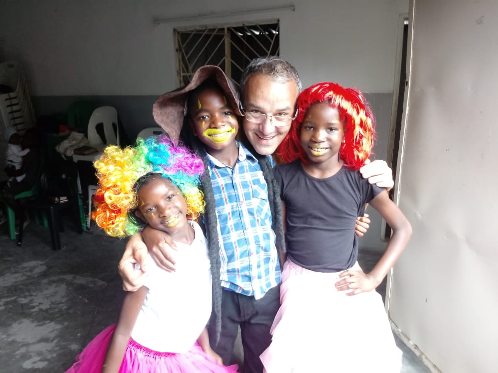
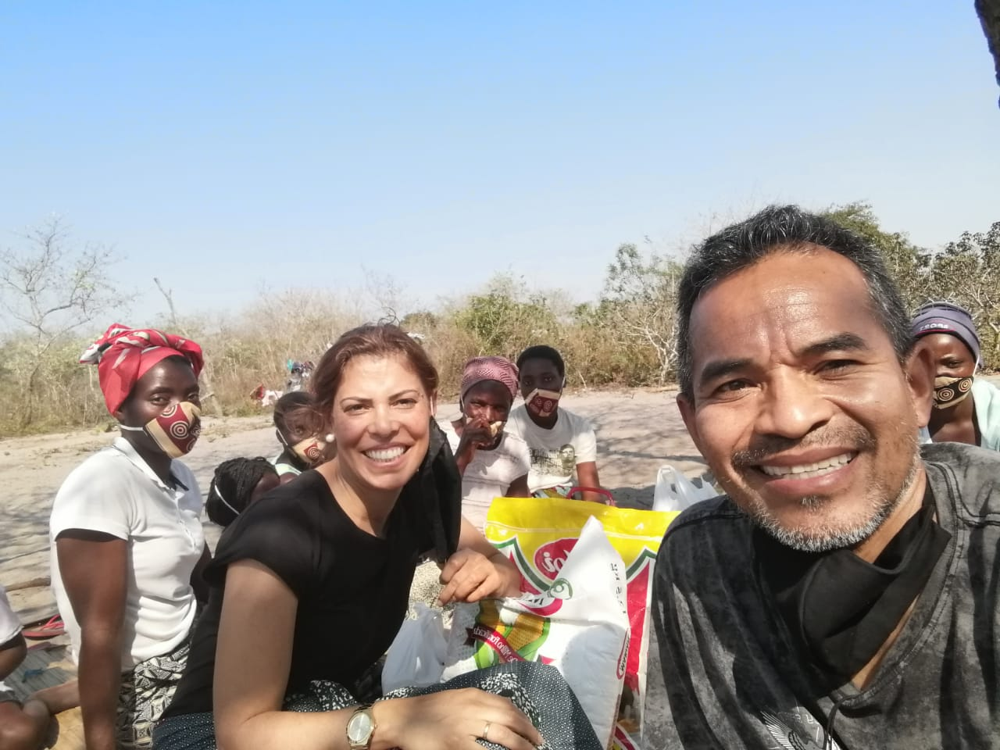
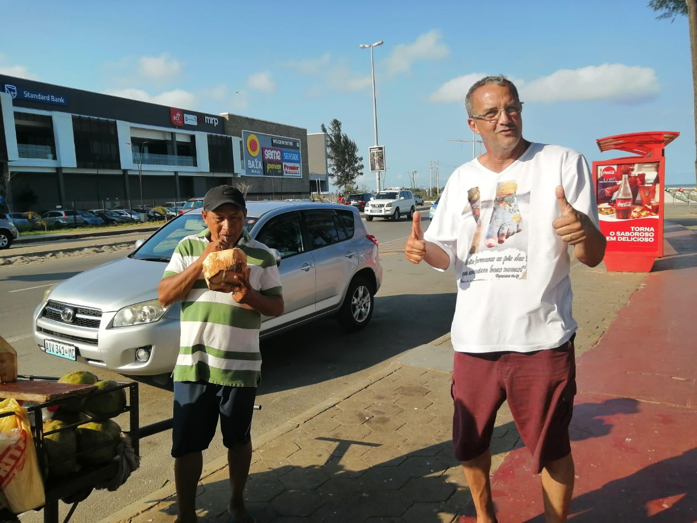
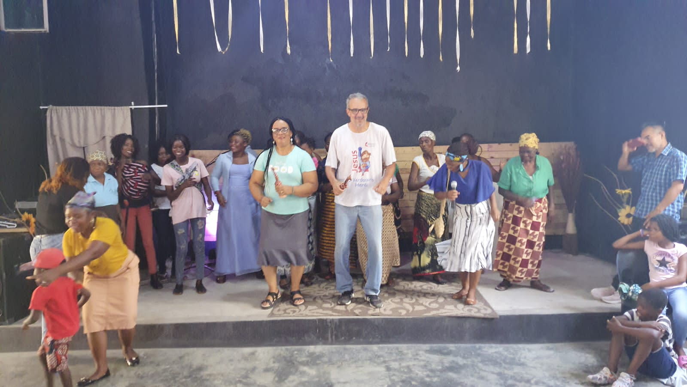
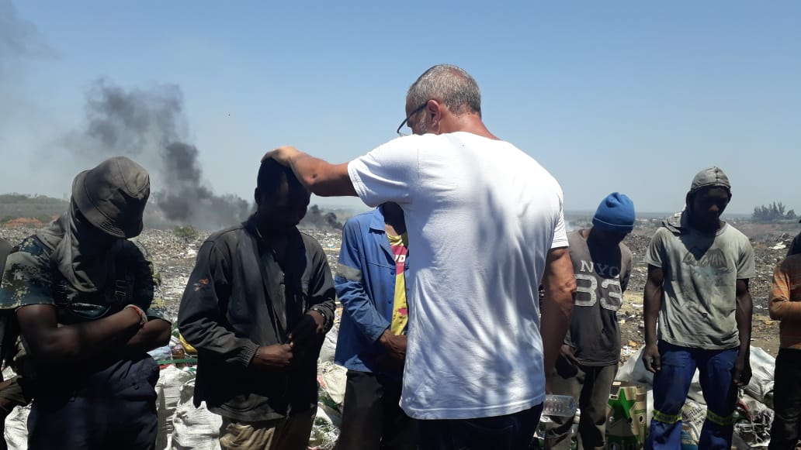
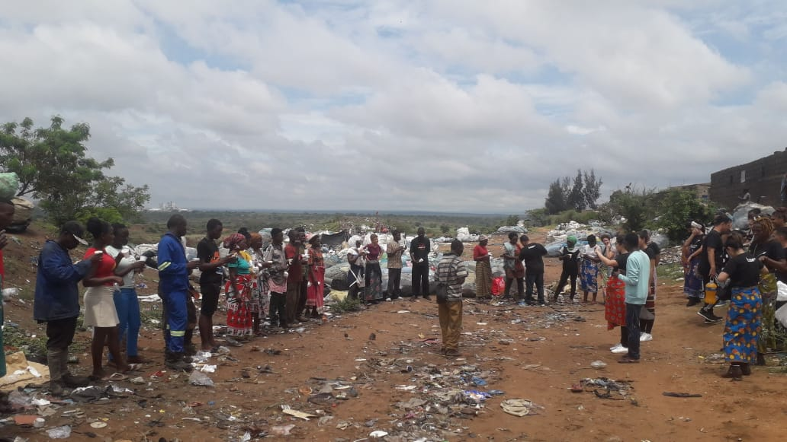
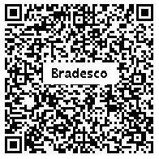

Junte-se a nós na missão de levar esperança, dignity e conhecimento para centenas de crianças na África através da nova Sala de Informática.
Quero ContribuirUma das formas mais poderosas de transformar o futuro de uma comunidade é através da educação digital. Nosso objetivo atual é iniciar uma **Sala de Informática** estruturada para ensinar as crianças, preparando-as para novas oportunidades de vida.
Sua ajuda fará a diferença na aquisição de computadores, periféricos e na infraestrutura necessária para que as aulas aconteçam em nome de Jesus.






Se estiver no computador: Abra o app do seu banco e escaneie o código abaixo.
⚠️ Atenção: Escaneie direto pelo app do seu banco (evite usar a câmera normal do celular).

Beneficiário: Gilberto Francisco de Mattos Filho
Após realizar o Pix, preencha os dados abaixo para enviar a notificação automática e receber nosso agradecimento por e-mail.